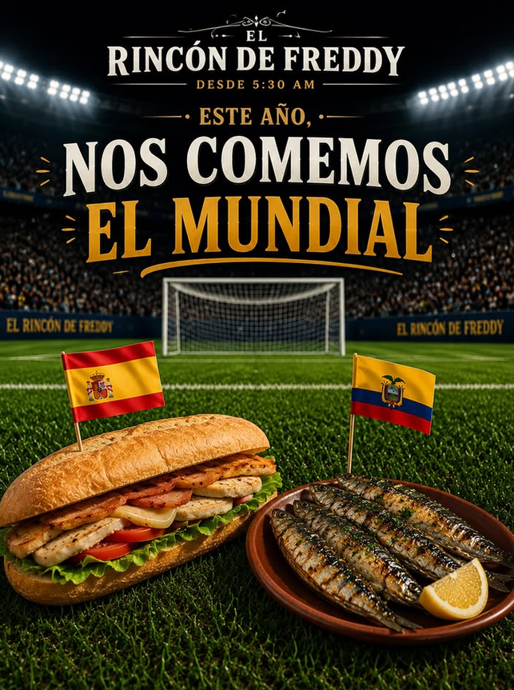
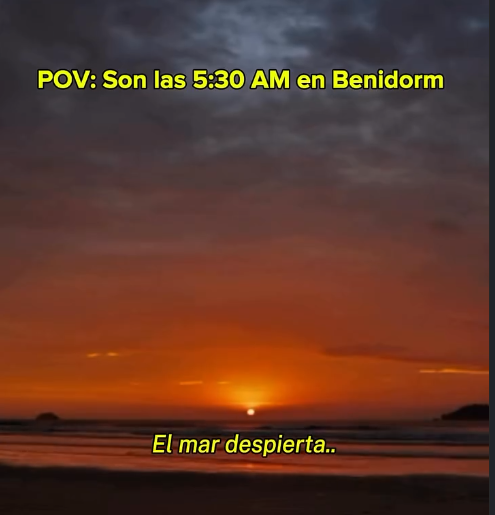

Desayunos
DesayunosDesayunos desde las 5:30 AM en Benidorm
Ven a Rincón de Freddy y disfruta de desayunos desde las 5:30 AM, tapas caseras, sardinas a la plancha y el mejor ambiente para compartir.
Leer artículoBlog
Una colección de artículos originales sobre el producto fresco, las tapas, el ambiente mediterráneo y las pequeñas costumbres que hacen mejor una parada en Rincón de Freddy.
Categorías
La paginación está preparada para crecer sin cambiar la estructura. Cada tarjeta enlaza a su post con contenido largo, imagen y artículos relacionados.
DesayunosVen a Rincón de Freddy y disfruta de desayunos desde las 5:30 AM, tapas caseras, sardinas a la plancha y el mejor ambiente para compartir.
Leer artículo
AmbienteDesde España apoyamos a La Tri con el mismo sabor de casa. ¿Cuál es tu pronóstico para el partido? Déjanos tu marcador en los comentarios.
Leer artículo
AmbienteMientras la playa despierta, nosotros ya estamos preparando el primer café del día, las tostadas y nuestras sardinas frescas.☕️🌅 Porque los mejores días empiezan temprano. 📍Rincón de Freddy Av. Jaime I, 48, Benidorm ¿Team desayuno temprano o team tapas al mediodía? 👇 • • #Benidorm #BenidormFood #DesayunosBenidorm #TapasBenidorm #Sardinas
Leer artículo